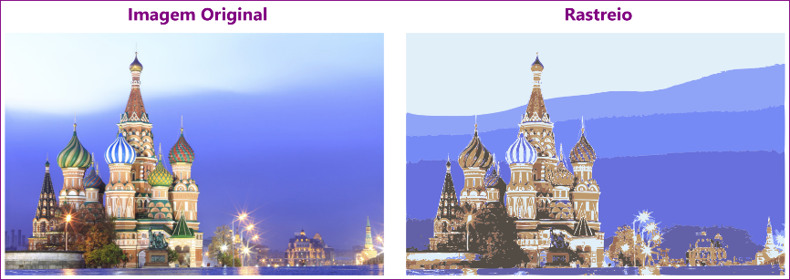

Para este exercício, utilize a imagem SanBasilio2.png da pasta de imagens fornecida por seu instrutor ou baixada da sessão de downloads do site do curso. Faremos uma operação simples e rápida de rastreio apenas para fim demonstrativo.
Para baixar as imagens e outros arquivos do curso, clique na Sessão de Downloads no final do Índice.
Para efetuar o rastreio siga este passo-a-passo:
1. Insira a imagem no Inkscape. Você pode fazê-lo pelo menu Arquivo → Importar, ou arrastá-la diretamente para dentro da aplicação.
2. Na janela Importar Bitmap, clique em Ok.
3. Salve o arquivo pois o processo de rastreio costuma exigir certa quantidade de memória do computador, o que pode travar o software.
4. Selecione a imagem.
5. Clique no menu Caminho → Rastrear Bitmap.
6. Na janela de encaixe Rastrear Bitmap, selecione Varreduras Multiplas, e na caixa de seleção escolha Cores. Clique em Aplicar.
7. Um grupo de vetores será criado em cima da imagem, arraste-o para fora.
Note que você tem algo semelhante à imagem original, mas sem pixels. É possível ainda desagrupar os vetores criados, no entanto, você perceberá que o resultado do rastreio não segue as linhas dos objetos na imagem, isso porque na realidade não existem linhas e sim variações de cores, então cada caminho criado busca preencher uma área de cores semelhantes com uma única cor.
Outro ponto a se ressaltar é que a quantidade de vértices, ou nós em cada curva, costuma ser bem maior do que acontece quando nós mesmos desenhamos, o que torna o tamanho do arquivo bem maior e necessita mais capacidade de processamento do computador.
A finalidade do rastreio geralmente é criar uma imagem que possa ser ampliada o quanto for necessário sem exibir pixels, o que é útil quando essa imagem é utilizada em grandes dimensões. O rastreio também é muito utilizado como um efeito de imagem.
Ao importar uma imagem, na janela de importação você tem a opção de escolher embutir ou vincular a imagem. Uma imagem embutida é copiada para dentro do software de forma que a original na pasta pode ser deletada sem interferir na que está importada, no entanto isso afeta o tamanho do arquivo que você está trabalhando. Quando utilizamos a opção de vincular, o tamanho do arquivo não muda, isso porque a imagem inserida é apenas um caminho para a imagem original, no entanto se ela for excluída da pasta será removida de dentro do arquivo. A opção vincular também é útil quando precisamos alterar a imagem original em outro software.